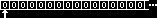

Yet another brainfuck reference.Who can program anything useful with it? :)The brainfuck language is a minimalistic imperative programming language, designed by Urban Müller around 1993. The canonical brainfuck distribution is at http://wuarchive.wustl.edu/pub/aminet/dev/lang/brainfuck-2.lha. Though Turing-complete, brainfuck was not intended for serious use. This page aims to be a complete description of the language itself, as distinct from implementations or perversions of the language, or code written in it. The source code for a brainfuck program consists of a single file of ASCII text, whose filename should ideally end with ".b" (the ending ".bf" is rather for Befunge source code). Each character in the file is either a command, or not. Characters that are not commands are ignored. (This should presumably include extended-ASCII characters.) A brainfuck program uses a movable pointer to manipulate an array, or ordered set, of at least 30,000 cells. Each cell holds an integer value (minimally and usually one byte), and has an initial value of zero; the pointer initially indicates the leftmost cell.  The control flow, which determines which commands are executed when, is as follows. Control begins at the first command, if any; when a command has control, it is executed, and by default control passes to the following command, if any; if and when no command has control, the program terminates. There are eight brainfuck commands. They could also be called "instructions". "Operators" would be wrong and "statements" would be a stretch. The + command increments (increases by one) the value of the cell indicated by the pointer. If that cell was already at its maximum value, it may (or may not) assume its minimum value. The - command decrements (decreases by one) the value of the cell indicated by the pointer. If that cell was already at its minimum value, it may (or may not) assume its maximum value. The > command moves the pointer to the next cell to the right. If the pointer was already at the rightmost cell (if any) the results are unpredictable. The < command moves the pointer to the next cell to the left. If the pointer was already at the leftmost cell, the results are unpredictable. The [ command checks the value of the cell indicated by the pointer, and if its value is zero, control passes not to the next command, but to the command following the matching ']' command. The ] command checks the value of the cell indicated by the pointer, and if its value is nonzero, control passes not to the next command, but to the command following the matching '[' command.
The . command outputs the value of the cell indicated by the pointer. If that value will not fit in a byte it may first be reduced modulo 256. The , command requests one byte of input, and sets the cell indicated by the pointer to the value received, if any.
Two other characters have special meanings in connection with the brainfuck language; however, these are features of certain implementations, rather than features of the language itself. The # character, in some implementations, functions as a command which outputs the program's internal state, for debugging purposes. This command originated as a feature of Urban Müller's original interpreter in C; there it outputs the values of the first ten array cells in decimal, and indicates the pointer's location. The ! character is used in connection with Frans Faase's brainfuck interpreter written in brainfuck, and my clone of same, to separate brainfuck programs from the input for them, since these interpreters must receive both programs and input via brainfuck's single input channel and must distinguish them somehow. Turing-completenessIn the documentation to version 2, Urban Müller said "Now while this seems to be a pretty useless language, it can be proven that it can compute every solvable mathematical problem (if we ignore the array size limit and the executable size limit)." Frans Faase gives several proofs of brainfuck's Turing-completeness, which make subtly different assumptions. The first assumes an unlimited array of unlimited-range variables; the second, based on utm.b, assumes an unlimited array of variables with range at least 0-100; and the third assumes an array of at least five unlimited-range variables. The second proof's assumptions are closest to the original implementations (and most subsequent ones); and that proof also shows that brainfuck remains Turing-complete when limited in certain ways. Any brainfuck dialect or implementation that can run utm.b running on arbitrary valid input is Turing-complete; likewise any brainfuck dialect or implementation that can run dbfi.b running utm.b running on arbitrary valid input. This means brainfuck is still Turing-complete when, e.g., the program length is limited to 423 commands and the depth of nested brackets to 7. The program size can easily be further reduced to 273, and the range of the variables to 0-23, by changing some i/o formats.-Daniel B. Cristofani (cristofdathevanetdotcom) back to main brainfuck page |